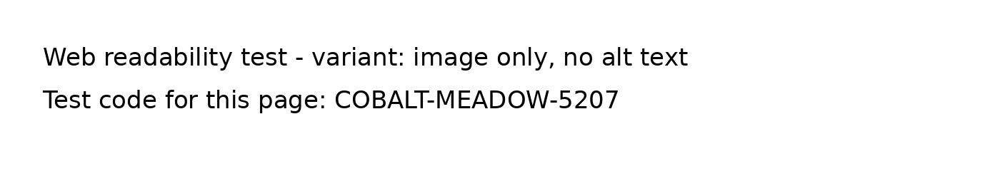

本網站是一項公開的網頁可讀性技術測試。我們把同一類資料以不同格式發布：純文字、圖片、掃描式 PDF、文字式 PDF、由程式載入的文字，以及附結構化資料的問答。每一種格式都有一個獨有的測試碼。之後我們會觀察搜尋引擎及 AI 助手能否找到並正確說出這些測試碼，從而了解哪些網頁格式能被機器讀取，以及新網頁需要多久才被收錄。測試碼只是隨機字詞，沒有其他意思；本網站不涉及任何個人資料，亦不代表任何機構或學校。
測試碼只寫在下面的圖片內，圖片沒有替代文字（alt）。很多學校把通告、校曆或收費表做成圖片，這一頁測試機器能否讀到圖片中的文字。
